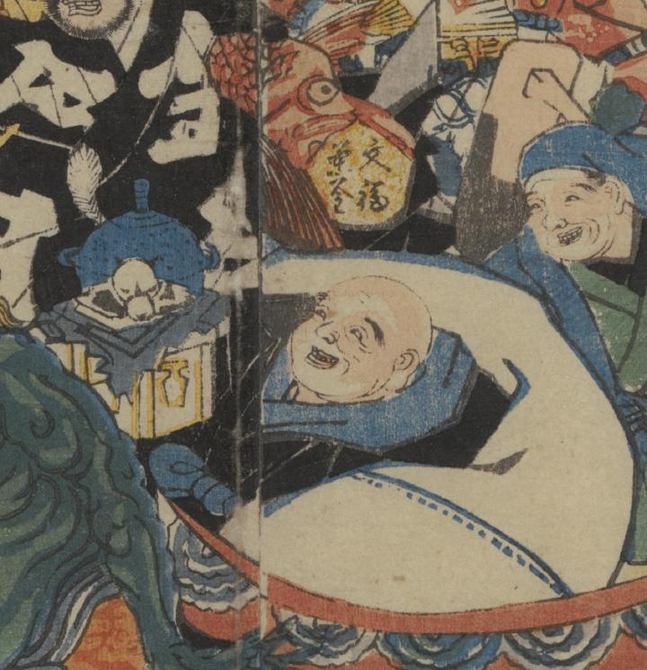

『ぶんぶく茶釜』の和尚が、文福茶釜（狸の茶釜）とともに、船に乗っている。
著作者：一惠齋芳㡬／出典：親書誌：U426_nichibunken_0381：昔咄赤本壽語禄；ムカシバナシ アカホン スゴロク／日付：2014／資源識別子：U426_nichibunken_0381_0001_0004
Copyright (c)2010- International Research Center for Japanese Studies, Kyoto, Japan. All rights reserved.